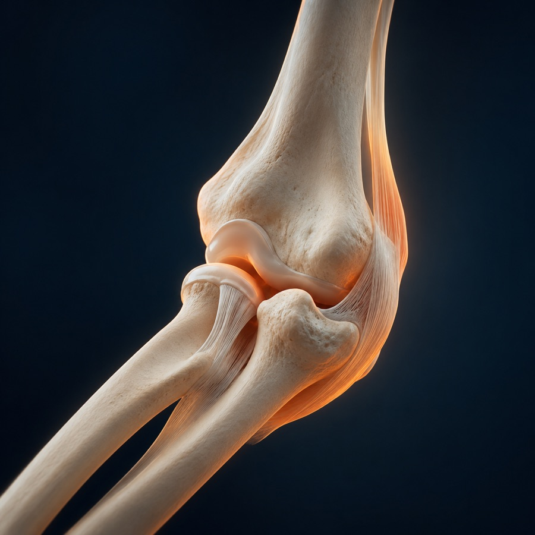
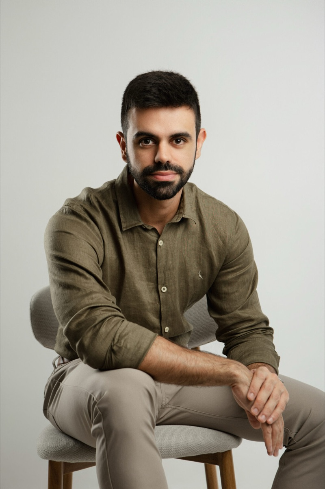

Bursite, epicondilite ou dor no cotovelo? Ortopedista de cotovelo em Vila Mariana, São Paulo
Dor no cotovelo costuma aparecer aos poucos - no treino, na raquete, no teclado - até atrapalhar gestos simples como segurar um copo. A avaliação identifica a origem da sobrecarga para tratar a causa, não só o sintoma.

O que é avaliado no cotovelo
A consulta serve para diferenciar condições que causam dores parecidas - e que pedem tratamentos diferentes.
- Bursite do olécranoInflamação da bolsa na ponta do cotovelo. Inchaço visível é o sinal mais comum.
- Epicondilite lateralConhecida como cotovelo de tenista: dor na parte externa, ao segurar ou girar objetos.
- Tendinite no cotoveloInflamação dos tendões por gesto repetido, no esporte ou no trabalho.
- Dor por sobrecargaDores que surgem com o volume de treino ou de atividade repetitiva.
- Lesões traumáticasLesões decorrentes de queda ou impacto, que limitam o movimento.
- Perda de funçãoDificuldade para estender, dobrar ou fazer força com o braço.
Quando vale procurar avaliação
Identificar os sinais cedo ajuda a evitar que uma lesão simples se torne mais grave.
- Dor persistente que não melhora com repouso
- Lesão durante atividade física ou trauma
- Dificuldade ou perda de movimento
- Estalos, travamentos ou instabilidade
- Limitação para o dia a dia ou para o esporte

A melhor qualidade do cirurgião é saber não indicar uma cirurgia.
Vila Mariana, no coração de São Paulo
R. Domingos de Morais, 2781 - 12 andar Vila Mariana, São Paulo - SP, 04035-001WhatsApp: (11) 91214-1608
Instagram: @drthalespizziolo
Horário de Funcionamento
- Domingo Fechado
- Segunda a Sexta 08:00 - 20:00
- Sábado 09:00 - 12:00
Atendimento particular, sem convênio, com possibilidade de emissão de nota fiscal para solicitação de reembolso ao seu plano de saúde.